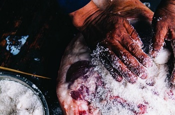
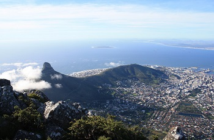
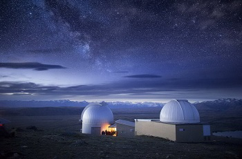
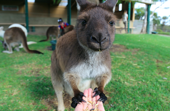

碧山的这个行程带你看大理人看的景，喝大理人喝的茶，吃大理人吃的饭，住大理人住的房。你会在苍山下的茶园里采茶喝茶，你会在白族人家程阿姨家来顿地道的洋芋火腿焖饭，你会逛逛热闹的喜洲市场，你会接受白族三道茶的招待，你会在洱海旁的山水画中骑行，你会在魏宝山的古林里打太极，你会在回族村落参观古建筑，你会在沙溪看云南最大的石窟，你会在白族施大姐家学做乳饼……而且这几天，你都会住在一座始建于民国初期的白族老宅，在一时空体里体验过去和现在，历史和现实。

这个行程囊括南非自然风光、美食佳酿和野生动物三大亮点。最南端的美丽城市开普敦，好似非洲的旧金山或悉尼，但又拥有自己的韵味。离开普敦不远的葡萄酒产区，集结了美国纳帕酒区和法国南部波尔多酒区的美，成了今日南非美食美酒中心。高尔夫、野生动物公园Safari必不可少，任意寻踪五大兽。

这是一条一次领略南北岛风情的新西兰经典线路。除了雄伟的冰川、瑰丽的峡湾、嶙峋的高峰、广阔的平原，还有高低山峦、热带丛林、火山高地以及金银细沙铺成的千里海滩，种种美景，尽在新西兰。这条经典路线，将带您由南到北，穿越新西兰的万水千山，领略自然、纯净而美丽的景观，品味新鲜、多样而美味的食材。

通过这趟旅行，您将深入南澳大利亚，从南澳首府城市阿德莱德出发，沿途不仅可以领略澳大利亚特有的地质奇观，还能见到当地特有的野生动物。除了自然风光，您还将拜访南澳港口城市，了解当地渔业发展。旅行途中，美食和美酒同样不可错过。优质的土壤和气候使这里的葡萄酒远近闻名。南澳的天时地利还体现在美食上，美味的牡蛎和新鲜多样的鱼类保证能够满足你的味蕾。

中国的春节，是辞旧迎新的时刻，也是非洲大草原上新生命诞生的季节。上千万的动物宝宝将在这一时间临，从生命的第一步——站立，到随大部队迁徙，躲避猛兽的攻击，坦桑尼亚的野生动物们和人类依旧保留着原始的生活方式，充满了野性的力量。 数以千万计的野生动物们奔徙在这里，在这片非洲大陆东部边缘而又毗邻印度洋的土地上。它们用自己蹄音敲打着大地的心脏，就好像非洲鼓一般，激荡出生命最激昂的心跳。